ProudNet UE5 示例
使用 ProudNet 网络库和虚幻引擎 5 实现多人游戏的综合指南。涵盖聊天系统、角色网络和高级多人游戏功能。
📋 目录
- 1. 项目设置
准备和配置虚幻引擎 5 项目以集成 ProudNet
- 2. 创建本地聊天
创建用于测试和基础的本地聊天系统
- 3. 创建在线聊天
使用 ProudNet 实现网络聊天功能
- 4. 实现幻影角色
构建具有增强游戏功能的幻影角色
- 5. 幻影角色在线集成
将幻影角色与 ProudNet 网络集成以实现多人游戏
- 6. 最终项目构建和测试
项目完成、构建和综合测试程序
1. 项目设置
本节介绍创建启用 ProudNet 的虚幻引擎 5 项目所需的初始设置和配置。
1.1. ProudNet 安装
- 从 https://github.com/Nettention/ProudNet 存储库安装最新版本。
- 默认安装路径为 "C:\Program Files (x86)\Nettention\ProudNet"。本指南和 UE5 插件都基于此路径配置，如果您更改安装路径，需要修改插件源代码并仔细检查指南。
1.2. Visual Studio 项目配置
- 在 Visual Studio 中创建空白项目
- 本指南使用以下路径/名称。
Visual Studio 项目创建
- 向 chat_server 项目添加 3 个新项目：main.cpp、setting.cpp、setting.h。
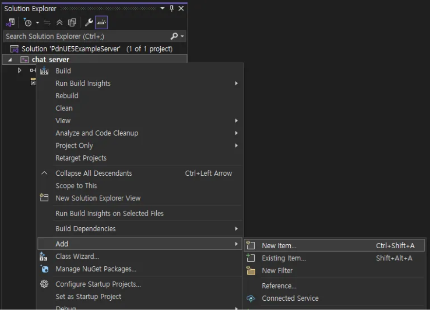
添加项目文件
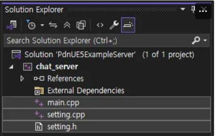项目结构
- 修改 chat_server 项目的属性。
- "C/C++ - 语言 - C++ 语言标准"
- 从下拉菜单中选择 "ISO C++20 标准 (/std:C++20)"
- "C/C++ - 常规 - 附加包含目录"
- 从下拉菜单中选择 <编辑…>
- 在弹出窗口中添加以下路径
C:\Program Files (x86)\Nettention\ProudNet\include
- "链接器 - 常规 - 附加库目录"
- 从下拉菜单中选择 <编辑…>
- 在弹出窗口中添加以下路径
C:\Program Files (x86)\Nettention\ProudNet\lib\$(Platform)\v140\$(Configuration)
- "链接器 - 输入 - 附加依赖项"
- 从下拉菜单中选择 <编辑…>
- 在弹出窗口中添加以下文件名
ProudNetServer.lib ProudNetClient.lib
- "生成事件 - 生成后事件 - 命令行"
- 从下拉菜单中选择 <编辑…>
- 在弹出窗口中添加以下命令
xcopy /Y "C:\Program Files (x86)\Nettention\ProudNet\lib\$(Platform)\v140\$(Configuration)\libcrypto-3-x64.dll" "$(OutDir)" xcopy /Y "C:\Program Files (x86)\Nettention\ProudNet\lib\$(Platform)\v140\$(Configuration)\libssl-3-x64.dll" "$(OutDir)"
- "C/C++ - 语言 - C++ 语言标准"
- 在每个源文件中输入代码。
- setting.h (差异)
+ #pragma once + + namespace ProudSetting + { + namespace CHAT + { + extern const ::Proud::Guid version; + extern const int server_port; + } + } - setting.cpp (差异)
+ #include <ProudNetClient.h> + #include "setting.h" + + namespace ProudSetting + { + namespace CHAT + { + const ::Proud::PNGUID guid = { 0x3ae33249, 0xecc6, 0x4980, { 0xbc, 0x5d, 0x7b, 0xa, 0x99, 0x9c, 0x7, 0x39 } }; + const ::Proud::Guid version = ::Proud::Guid(guid); + const int server_port = 33337; + } + } - main.cpp (差异)
+ #include <iostream> + #include <format> + #include <memory> + + #include <ProudNetServer.h> + #include "setting.h" + + std::shared_ptr<Proud::CNetServer> net_server; + + int main() + { + net_server = std::shared_ptr<Proud::CNetServer>(Proud::CNetServer::Create()); + + net_server->OnClientJoin = [](Proud::CNetClientInfo* clientInfo) + { + std::cout << "Client[" << (int)clientInfo->m_HostID << "] connected.\n"; + }; + net_server->OnClientLeave = [](Proud::CNetClientInfo* clientInfo, Proud::ErrorInfo* error, const Proud::ByteArray byte_arr) + { + std::cout << "Client[" << (int)clientInfo->m_HostID << "] disconnected.\n"; + }; + + Proud::CStartServerParameter start_param; + start_param.m_protocolVersion = ProudSetting::CHAT::version; + start_param.m_tcpPorts.Add(ProudSetting::CHAT::server_port); + + try + { + net_server->Start(start_param); + } + catch (Proud::Exception& error) + { + std::cout << "Server start failed: " << error.what() << endl; + return 0; + } + + std::cout << ("Server started. Enterable commands:\n"); + std::cout << ("-q : Quit.\n"); + std::string input; + while (true) + { + std::cin >> input; + if (input[0] == '-') + { + if (input == "-q") + break; + } + } + + std::cout << "Stopping server...\n"; + net_server->Stop(); + net_server = nullptr; + std::cout << "Server stopped.\n"; + return 0; + }
完整代码
- setting.h
#pragma once namespace ProudSetting { namespace CHAT { extern const ::Proud::Guid version; extern const int server_port; } } - setting.cpp
#include <ProudNetClient.h> #include "setting.h" namespace ProudSetting { namespace CHAT { const ::Proud::PNGUID guid = { 0x3ae33249, 0xecc6, 0x4980, { 0xbc, 0x5d, 0x7b, 0xa, 0x99, 0x9c, 0x7, 0x39 } }; const ::Proud::Guid version = ::Proud::Guid(guid); const int server_port = 33337; } } - main.cpp
#include <iostream> #include <format> #include <memory> #include <ProudNetServer.h> #include "setting.h" std::shared_ptr<Proud::CNetServer> net_server; int main() { net_server = std::shared_ptr<Proud::CNetServer>(Proud::CNetServer::Create()); net_server->OnClientJoin = [](Proud::CNetClientInfo* clientInfo) { std::cout << "Client[" << (int)clientInfo->m_HostID << "] connected.\n"; }; net_server->OnClientLeave = [](Proud::CNetClientInfo* clientInfo, Proud::ErrorInfo* error, const Proud::ByteArray byte_arr) { std::cout << "Client[" << (int)clientInfo->m_HostID << "] disconnected.\n"; }; Proud::CStartServerParameter start_param; start_param.m_protocolVersion = ProudSetting::CHAT::version; start_param.m_tcpPorts.Add(ProudSetting::CHAT::server_port); try { net_server->Start(start_param); } catch (Proud::Exception& error) { std::cout << "Server start failed: " << error.what() << endl; return 0; } std::cout << ("Server started. Enterable commands:\n"); std::cout << ("-q : Quit.\n"); std::string input; while (true) { std::cin >> input; if (input[0] == '-') { if (input == "-q") break; } } std::cout << "Stopping server...\n"; net_server->Stop(); net_server = nullptr; std::cout << "Server stopped.\n"; return 0; }
- setting.h (差异)
- 构建并运行项目 (F5) 查看以下界面。
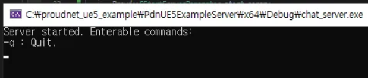
服务器运行界面
1.3. 虚幻引擎项目配置
- 将 Infima Games 的免费 FPS 模板 添加到您的库中。
- 按照以下步骤创建模板项目。
- 启动 Epic Games 启动器
- 导航至虚幻引擎选项卡
- 导航至库选项卡
- 在 Fab 库列表中点击"免费 FPS 模板和教程"的"创建项目"
- 更改名称和文件夹，然后点击创建
- 本指南使用以下名称和路径。
虚幻项目创建
- 按照以下步骤创建 C++ 类。
- 顶部工具栏 - 工具 - 新建 C++ 类
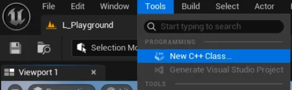
C++ 类创建菜单
- 显示所有类，然后选择 GameInstanceSubsystem
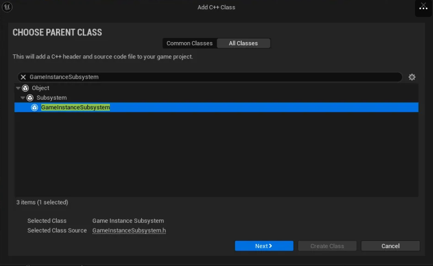
GameInstanceSubsystem 选择
- 类类型 - 选择 Public 并输入类名，然后创建类
- 本指南使用 GissChatNet。
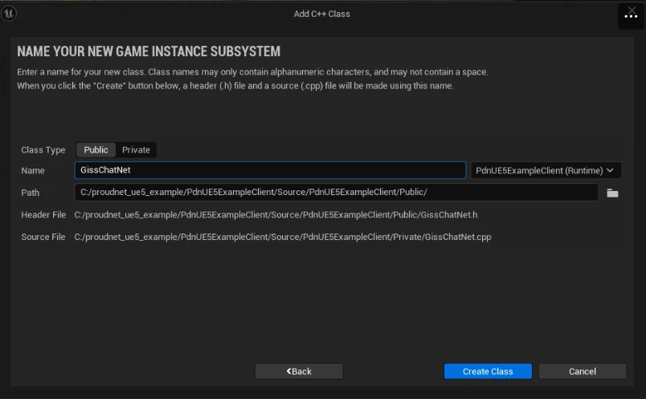
输入类名
- 本指南使用 GissChatNet。
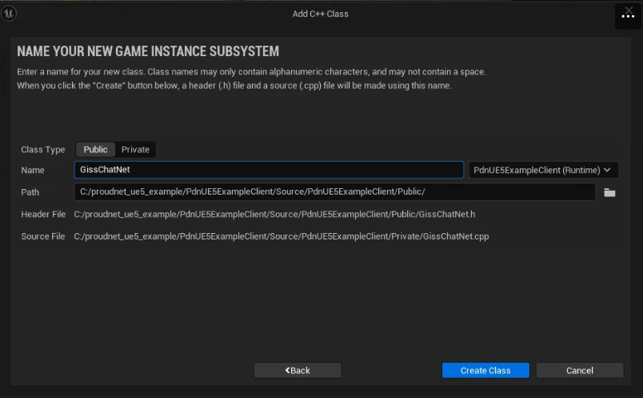
- 顶部工具栏 - 工具 - 新建 C++ 类
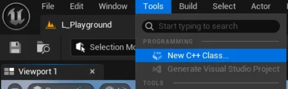
- 按照以下步骤为虚幻项目生成 VS 解决方案。
- 关闭虚幻引擎编辑器。
- 导航至虚幻项目文件夹。
- 右键点击 PdnUE5ExampleClient.uproject 并选择生成 Visual Studio 项目文件
- 更改启动项目（推荐）
- 指导图片
更改启动项目
- 按照以下步骤应用 UE5 ProudNet 插件。
- 打开虚幻项目文件夹。
快捷方式：Epic Games Launcher → 我的项目 → 右键单击项目 → 在文件夹中显示
- 解压以下文件并将其放置在 Plugins 文件夹中。
如果不存在，请创建新的 Plugins 文件夹。
ProudNet UE5 Lib Linker Plugin.zip
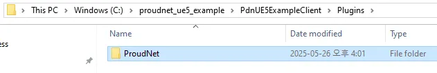插件文件夹结构
- 重新生成 Visual Studio 项目解决方案。
- 关闭 Visual Studio IDE。
- 右键单击 PdnUE5ExampleClient.uproject 并选择生成 Visual Studio 项目文件
- 修改 PdnUE5ExampleClient.Build.cs 代码。
- 指导图片
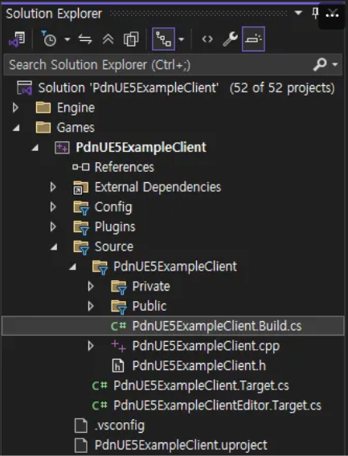
Build.cs 文件位置
- 修改内容
// Fill out your copyright notice in the Description page of Project Settings. using UnrealBuildTool; public class PdnUE5ExampleClient : ModuleRules { public PdnUE5ExampleClient(ReadOnlyTargetRules Target) : base(Target) { PCHUsage = PCHUsageMode.UseExplicitOrSharedPCHs; - PublicDependencyModuleNames.AddRange(new string[] { "Core", "CoreUObject", "Engine", "InputCore" }); + PublicDependencyModuleNames.AddRange(new string[] { "Core", "CoreUObject", "Engine", "InputCore", "ProudNet" }); PrivateDependencyModuleNames.AddRange(new string[] { }); // Uncomment if you are using Slate UI // PrivateDependencyModuleNames.AddRange(new string[] { "Slate", "SlateCore" }); // Uncomment if you are using online features // PrivateDependencyModuleNames.Add("OnlineSubsystem"); // To include OnlineSubsystemSteam, add it to the plugins section in your uproject file with the Enabled attribute set to true } } - 完整代码
// Fill out your copyright notice in the Description page of Project Settings. using UnrealBuildTool; public class PdnUE5ExampleClient : ModuleRules { public PdnUE5ExampleClient(ReadOnlyTargetRules Target) : base(Target) { PCHUsage = PCHUsageMode.UseExplicitOrSharedPCHs; PublicDependencyModuleNames.AddRange(new string[] { "Core", "CoreUObject", "Engine", "InputCore", "ProudNet" }); PrivateDependencyModuleNames.AddRange(new string[] { }); // Uncomment if you are using Slate UI // PrivateDependencyModuleNames.AddRange(new string[] { "Slate", "SlateCore" }); // Uncomment if you are using online features // PrivateDependencyModuleNames.Add("OnlineSubsystem"); // To include OnlineSubsystemSteam, add it to the plugins section in your uproject file with the Enabled attribute set to true } }
- 指导图片
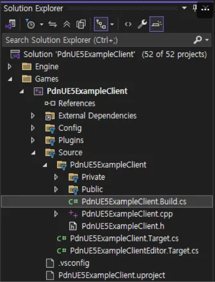
- 打开虚幻项目文件夹。
- 修改 GissChatNet.h 和 .cpp 代码。
- 指导图片
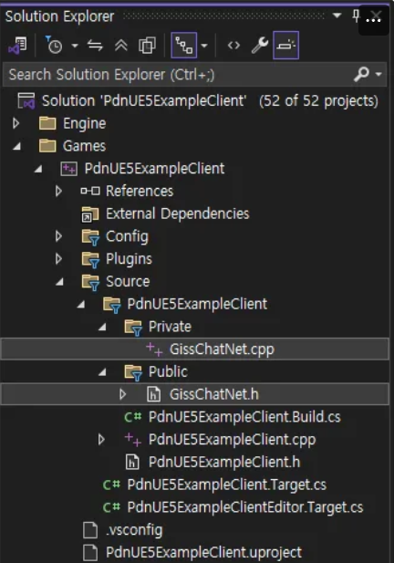
GissChatNet 文件
- GissChatNet.h（差异）
// Fill out your copyright notice in the Description page of Project Settings. #pragma once #include "CoreMinimal.h" #include "Subsystems/GameInstanceSubsystem.h" #include "GissChatNet.generated.h" /** * */ UCLASS() class PDNUE5EXAMPLECLIENT_API UGissChatNet : public UGameInstanceSubsystem { GENERATED_BODY() + private: + virtual void Initialize(FSubsystemCollectionBase& Collection) override; + virtual void Deinitialize() override; }; - GissChatNet.cpp（差异）
// Fill out your copyright notice in the Description page of Project Settings. #include "GissChatNet.h" + #include <format> + #include <functional> + + #include <ProudNetClient.h> + #include "C:/proudnet_ue5_example/PdnUE5ExampleServer/chat_server/setting.h" + #include "C:/proudnet_ue5_example/PdnUE5ExampleServer/chat_server/setting.cpp" + + static void LogPrint(const std::string& str) + { + UE_LOG(LogTemp, Log, TEXT("%s"), UTF8_TO_TCHAR(str.c_str())); + } + + static Proud::CriticalSection global_critical_section; + static std::shared_ptr<Proud::CNetClient> net_client; + static FDelegateHandle update_handle; + + void UGissChatNet::Initialize(FSubsystemCollectionBase& Collection) + { + net_client = std::shared_ptr<Proud::CNetClient>(Proud::CNetClient::Create()); + + bool connected = false; + + net_client->OnJoinServerComplete = [&](Proud::ErrorInfo* info, const Proud::ByteArray& replyFromServer) + { + Proud::CriticalSectionLock lock(global_critical_section, true); + + if (info->m_errorType == Proud::ErrorType::Ok) + { + auto log = std::format("Succeed to connect server. Allocated hostID={}\n", (int)net_client->GetLocalHostID()); + LogPrint(log); + + connected = true; + } + else + { + auto log = "Failed to connect to server.\n"; + LogPrint(log); + } + }; + + net_client->OnLeaveServer = [&](Proud::ErrorInfo* errorInfo) + { + Proud::CriticalSectionLock lock(global_critical_section, true); + + auto log = std::format("OnLeaveServer. {} \n", StringT2A(errorInfo->m_comment).GetString()); + LogPrint(log); + + connected = false; + if (update_handle.IsValid()) + { + FCoreDelegates::OnEndFrame.Remove(update_handle); + update_handle.Reset(); + } + }; + + Proud::CNetConnectionParam connection_param; + connection_param.m_protocolVersion = ProudSetting::CHAT::version; + connection_param.m_serverIP = _PNT("localhost"); + connection_param.m_serverPort = ProudSetting::CHAT::server_port; + connection_param.m_closeNoPingPongTcpConnections = false; + + net_client->Connect(connection_param); + + update_handle = FCoreDelegates::OnEndFrame.AddStatic([]() + { + if (net_client) + net_client->FrameMove(); + } + ); + } + + void UGissChatNet::Deinitialize() + { + net_client->Disconnect(); + net_client = nullptr; + } - 完整代码
- GissChatNet.h
// Fill out your copyright notice in the Description page of Project Settings. #pragma once #include "CoreMinimal.h" #include "Subsystems/GameInstanceSubsystem.h" #include "GissChatNet.generated.h" /** * */ UCLASS() class PDNUE5EXAMPLECLIENT_API UGissChatNet : public UGameInstanceSubsystem { GENERATED_BODY() private: virtual void Initialize(FSubsystemCollectionBase& Collection) override; virtual void Deinitialize() override; }; - GissChatNet.cpp
// Fill out your copyright notice in the Description page of Project Settings. #include "GissChatNet.h" #include <format> #include <functional> #include <ProudNetClient.h> #include "C:/proudnet_ue5_example/PdnUE5ExampleServer/chat_server/setting.h" #include "C:/proudnet_ue5_example/PdnUE5ExampleServer/chat_server/setting.cpp" static void LogPrint(const std::string& str) { UE_LOG(LogTemp, Log, TEXT("%s"), UTF8_TO_TCHAR(str.c_str())); } static Proud::CriticalSection global_critical_section; static std::shared_ptr<Proud::CNetClient> net_client; static FDelegateHandle update_handle; void UGissChatNet::Initialize(FSubsystemCollectionBase& Collection) { net_client = std::shared_ptr<Proud::CNetClient>(Proud::CNetClient::Create()); bool connected = false; net_client->OnJoinServerComplete = [&](Proud::ErrorInfo* info, const Proud::ByteArray& replyFromServer) { Proud::CriticalSectionLock lock(global_critical_section, true); if (info->m_errorType == Proud::ErrorType::Ok) { auto log = std::format("Succeed to connect server. Allocated hostID={}\n", (int)net_client->GetLocalHostID()); LogPrint(log); connected = true; } else { auto log = "Failed to connect to server.\n"; LogPrint(log); } }; net_client->OnLeaveServer = [&](Proud::ErrorInfo* errorInfo) { Proud::CriticalSectionLock lock(global_critical_section, true); auto log = std::format("OnLeaveServer. {} \n", StringT2A(errorInfo->m_comment).GetString()); LogPrint(log); connected = false; if (update_handle.IsValid()) { FCoreDelegates::OnEndFrame.Remove(update_handle); update_handle.Reset(); } }; Proud::CNetConnectionParam connection_param; connection_param.m_protocolVersion = ProudSetting::CHAT::version; connection_param.m_serverIP = _PNT("localhost"); connection_param.m_serverPort = ProudSetting::CHAT::server_port; connection_param.m_closeNoPingPongTcpConnections = false; net_client->Connect(connection_param); update_handle = FCoreDelegates::OnEndFrame.AddStatic([]() { if (net_client) net_client->FrameMove(); } ); } void UGissChatNet::Deinitialize() { net_client->Disconnect(); net_client = nullptr; }
- GissChatNet.h
- 指导图片
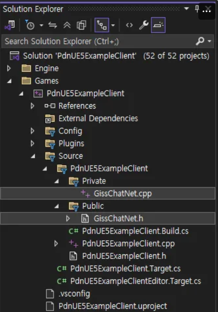
- 测试
- 从 PdnUE5ExampleServer 构建并运行 chat_server。
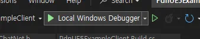
chat_server 执行
- 构建 PdnUE5ExampleClient 并在虚幻引擎编辑器中运行关卡。
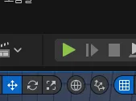
虚幻编辑器执行
- 如下所示，如果客户端和服务器连接成功。
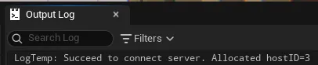
服务器连接成功
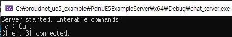客户端连接成功
- 从 PdnUE5ExampleServer 构建并运行 chat_server。
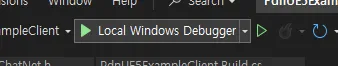
2. 创建本地聊天
本节介绍如何在虚幻引擎 5 中创建本地聊天窗口并实现基本聊天功能。
2.1. 创建聊天控件
- 按照以下步骤创建 BP_ChatWidget 控件蓝图
- 在内容浏览器的空白区域右键单击打开上下文菜单。
- 选择"创建高级资产 - 用户界面 - 控件蓝图"。
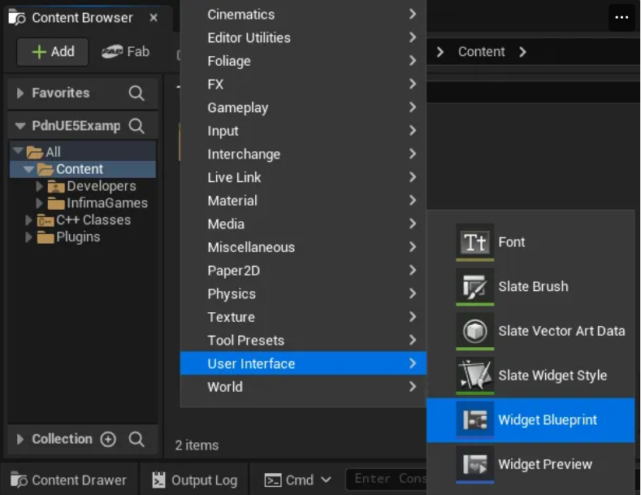
控件蓝图创建
- 选择"用户控件"
- 将名称更改为 BP_ChatWidget
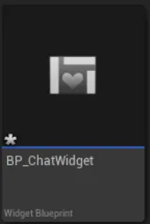
控件名称更改
- 按照以下步骤配置 BP_ChatWidget 控件的外观。
- 双击 BP_ChatWidget 打开蓝图编辑器。
- 根据以下结构配置控件。
- 控件元素结构
>> Canvas Panel >> Canvas Panel - Anchor: Bottom Left - Position: [x: 100, y: -200] - Size: [x: 640, y: 360] - Alignment: [x: 0, y: 1] >> Scroll Box - Anchor: Top - Position: [x: 0, y: 0] - Size: [x: 640, y: 300] - Alignment: [x: 0.5, y: 0] >> Canvas Panel - Anchor: Bottom - Position: [x: 0, y: 0] - Size: [x: 640, y: 48] - Alignment: [x: 0.5, y: 1] >> Text Box - Anchor: Left - Position: [x: 0, y: 0] - Size: [x: 520, y: 48] - Alignment: [x: 0, y: 0.5] >> Button - Anchor: Right - Position: [x: 0, y: 0] - Size: [x: 100, y: 48] - Alignment: [x: 1, y: 0.5] >> Text - Text: "Send"
配置完成后的外观如下。
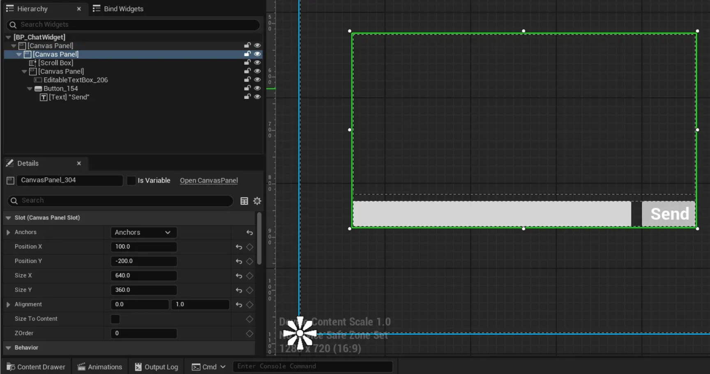聊天控件配置
- 控件元素结构
- 按照以下步骤将 BP_ChatWidget 添加到视口。
- 打开关卡蓝图编辑器。
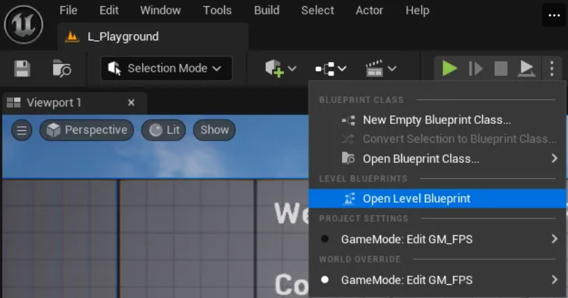
打开关卡蓝图编辑器
- 添加 Create Widget 节点并将类更改为 BP_ChatWidget。
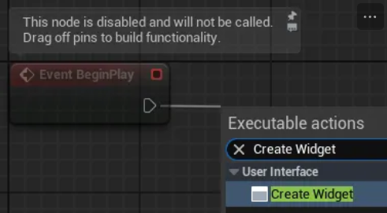
添加 Create Widget 节点
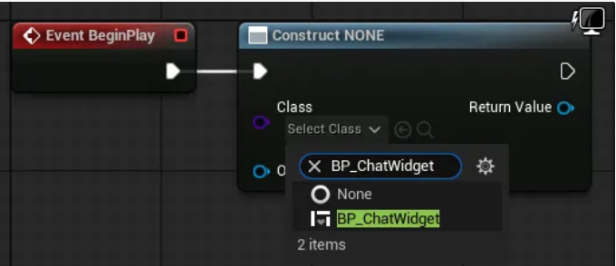类设置
- 添加 Add to Viewport 节点并连接它们。
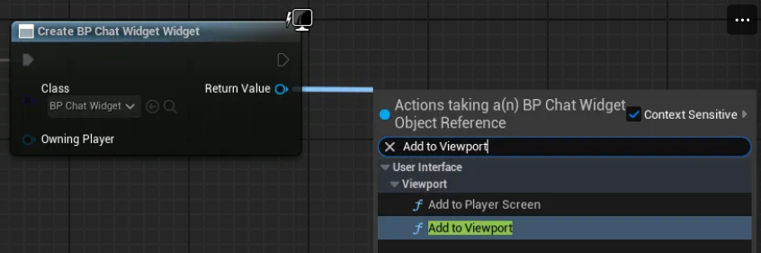
添加 Add to Viewport 节点
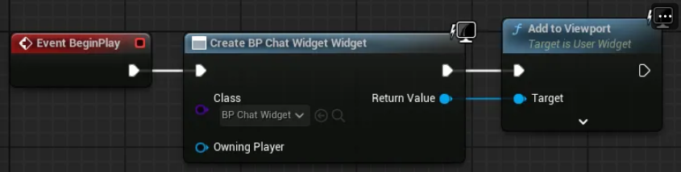节点连接
- 打开关卡蓝图编辑器。
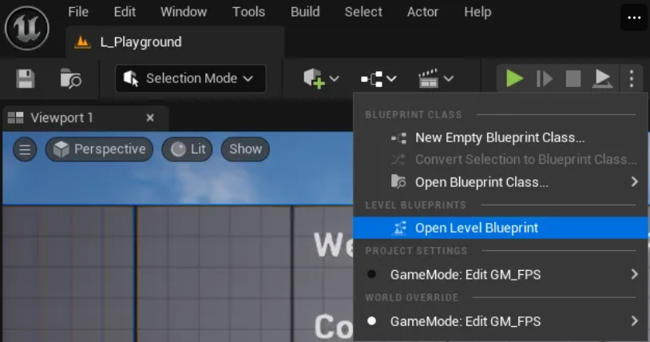
- 运行关卡并确认已添加聊天窗口。
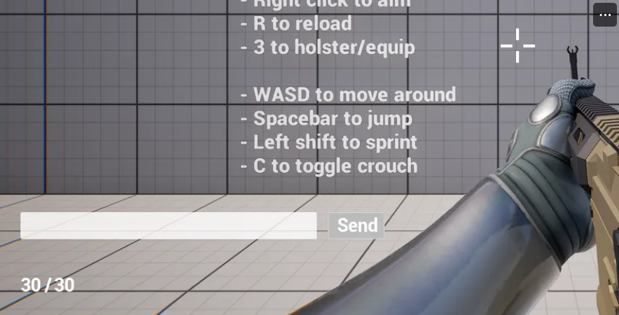
添加聊天窗口的屏幕
2.2. 实现聊天功能
- 创建新的控件蓝图 BP_ChatBlock 并配置其外观。
- 根据以下结构配置控件。
- 控件元素结构
>> Canvas Panel >> Border - Anchor: Top Left - Position: [x: 0, y: 0] - Size: [x: 640, y: 40] - Alignment: [x: 0, y: 0] - Brush Color: [R: 1, G: 1, B: 1, A: 0.5] >> Text > Name: ChatText > Check Variable - Horizontal Alignment: Left - Vertical Alignment: Center - Font-Size: 20
配置完成后的外观如下。
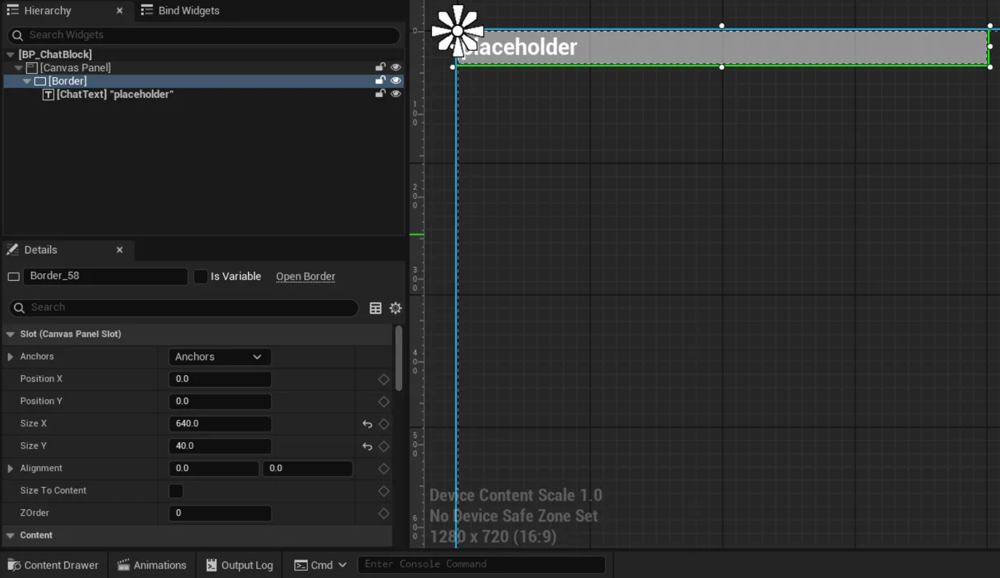BP_ChatBlock 配置
- 控件元素结构
- 根据以下结构配置控件。
- 按照以下步骤配置 BP_ChatBlock 控件的蓝图。
- 切换到蓝图图表模式。
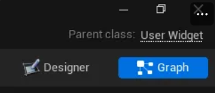
蓝图图表模式
- 配置 SetChatText 函数。
- 在蓝图窗口中创建函数。
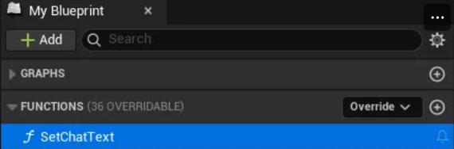
函数创建
- 在详细信息窗口中设置函数参数。
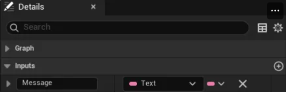
函数参数设置
- 从蓝图窗口的变量列表中拖拽 ChatText 并选择 Get ChatText。
- 创建并连接 SetText (Text) 节点。注意不要意外选择其他项目。
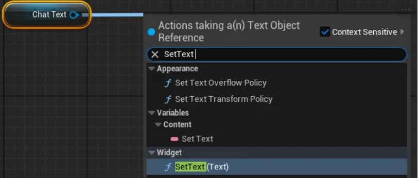
添加 SetText 节点
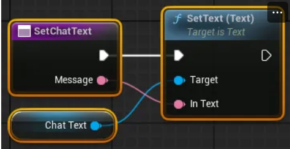节点连接完成
- 在蓝图窗口中创建函数。
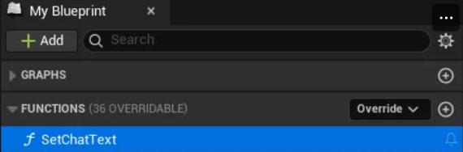
- 切换到蓝图图表模式。
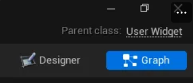
- 按照以下步骤配置 BP_ChatWidget 控件。
- 打开 BP_ChatWidget 蓝图编辑器并切换到设计器模式。
- 参考以下内容修改控件。
- 控件元素结构
-> Canvas Panel -> Canvas Panel -> Scroll Box > Name: ChatBlockArea > Check Variable -> Canvas Panel -> Button > Name: SendButton > Check Variable -> Text Box > Name: ChatTextBox > Check Variable
修改后的外观如下。
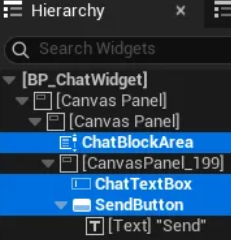BP_ChatWidget 修改完成
- 控件元素结构
- 将蓝图编辑器切换到图表模式。
- 配置 PrintChat 函数。
- 添加函数。
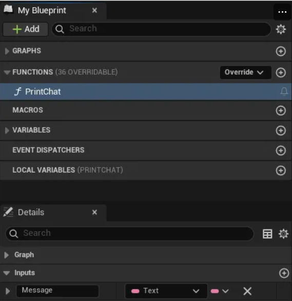
添加 PrintChat 函数
- 添加 Create Widget 节点并为类指定 BP_ChatBlock。
- 添加并连接 BP_ChatBlock 的 SetChatText 节点。
- 拖拽并添加 ChatBlockArea 变量。
- 添加 Add Child 节点并连接。

PrintChat 函数配置
- 添加函数。
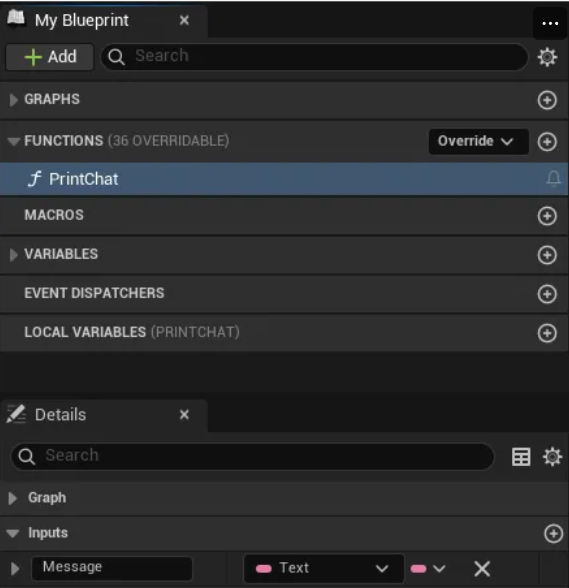
- 实现聊天消息发送事件。
- 从变量中选择 SendButton 并添加点击事件。
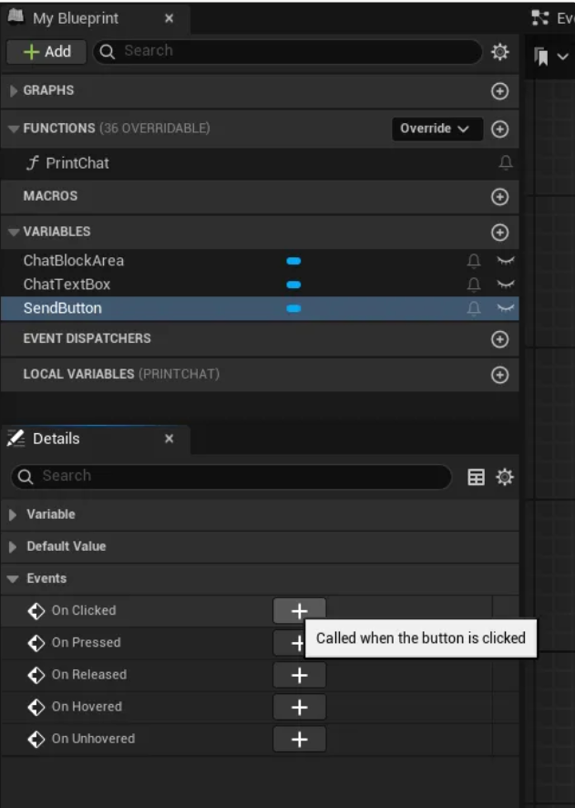
添加按钮点击事件
- 拖拽并添加 ChatTextBox 变量和 PrintChat 函数。
- 添加 Get Text (Text Box) 节点并连接所有内容。

聊天发送事件完成
- 从变量中选择 SendButton 并添加点击事件。
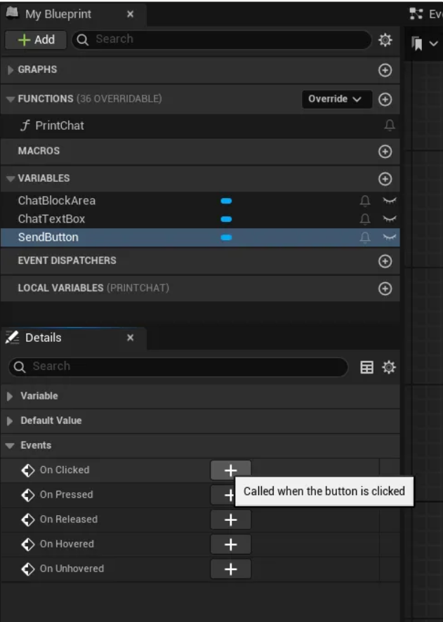
- 可以通过如下修改蓝图图表来实现附加功能（可选）。
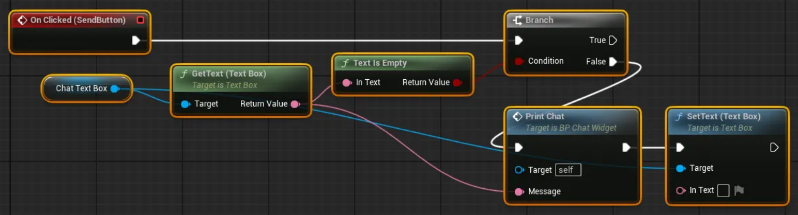
附加功能实现 1
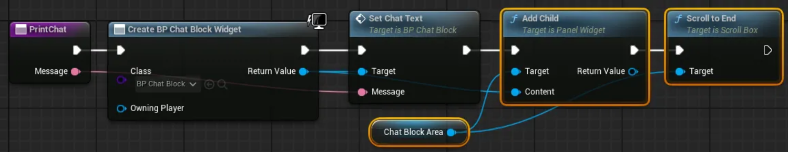附加功能实现 2
- 如果没有输入消息则忽略发送
- 发送后自动删除输入的消息
- 新聊天到达时自动滚动聊天窗口到底部
- 运行关卡并确认已添加聊天功能。

聊天功能验证
3. 创建在线聊天
本节介绍如何使用 ProudNet 实现网络聊天功能。
3.1. Visual Studio 项目工作
- 在 PdnUE5ExampleServer 中添加新的空项目 chat_pidl。
- 添加两个文件 C2S.PIDL、S2C.PIDL 并修改它们的属性。
- 从"常规 - 项目类型"下拉菜单中选择"自定义生成工具"
- 在"自定义生成工具 - 常规 - 命令行"中输入文本
C:\"Program Files (x86)"\Nettention\ProudNet\util\PIDL.exe "%(FullPath)" -cpp
- 在"自定义生成工具 - 常规 - 描述"中输入文本
%(Filename).PIDL Compiling...
- 从"自定义生成工具 - 常规 - 输出"下拉菜单中选择 <编辑…> 并在弹出窗口中添加以下路径
%(RootDir)%(Directory)\%(Filename)_common.cpp %(RootDir)%(Directory)\%(Filename)_common.h %(RootDir)%(Directory)\%(Filename)_proxy.cpp %(RootDir)%(Directory)\%(Filename)_proxy.h %(RootDir)%(Directory)\%(Filename)_stub.cpp %(RootDir)%(Directory)\%(Filename)_stub.h
- 在每个文件中输入代码。
- 完整代码
- C2S.PIDL
[access=public] global CHAT_C2S 3000 { Chat([in] Proud::String message); } - S2C.PIDL
[access=public] global CHAT_S2C 4000 { SystemChat([in] Proud::String message); BroadcastChat([in] int sender_id, [in] Proud::String message); }
- C2S.PIDL
- 完整代码
- 构建 chat_pidl 项目。可以在 chat_pidl 项目文件夹中查看已构建的源代码文件。
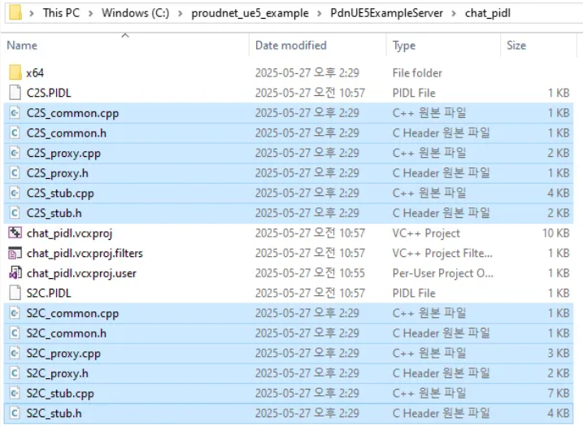
PIDL 构建结果
- 修改 chat_server 项目的 main.cpp 源代码。
- 修改内容
#include <iostream> #include <format> #include <memory> #include <ProudNetServer.h> #include "setting.h" + #include "../chat_pidl/S2C_common.h" + #include "../chat_pidl/S2C_common.cpp" + #include "../chat_pidl/S2C_proxy.h" + #include "../chat_pidl/S2C_proxy.cpp" + + #include "../chat_pidl/C2S_common.h" + #include "../chat_pidl/C2S_common.cpp" + #include "../chat_pidl/C2S_stub.h" + #include "../chat_pidl/C2S_stub.cpp" + + + Proud::HostID group_host_id = Proud::HostID_None; + CHAT_S2C::Proxy s2c_proxy; + + struct CHAT_C2S_Stub : public CHAT_C2S::Stub + { + public: + DECRMI_CHAT_C2S_Chat; + }; + + DEFRMI_CHAT_C2S_Chat(CHAT_C2S_Stub) + { + Proud::RmiContext rmi_context; + rmi_context.m_enableLoopback = false; + s2c_proxy.BroadcastChat(group_host_id, rmi_context, (int)remote, message); + std::cout << std::format("Player[{}] say {}\n", (int)remote, StringT2A(message).GetString()); + return true; + } + + CHAT_C2S_Stub c2s_stub; std::shared_ptr<Proud::CNetServer> net_server; int main() { net_server = std::shared_ptr<Proud::CNetServer>(Proud::CNetServer::Create()); net_server->OnClientJoin = [](Proud::CNetClientInfo* clientInfo) { std::cout << "Client[" << (int)clientInfo->m_HostID << "] connected.\n"; + + Proud::HostID list[100]; + int listCount = net_server->GetClientHostIDs(list, 100); + group_host_id = net_server->CreateP2PGroup(list, listCount, Proud::ByteArray()); + + auto message = std::format("Player[{}] has joined.", (int)clientInfo->m_HostID); + Proud::RmiContext rmi_context; + s2c_proxy.SystemChat(group_host_id, rmi_context, message); }; net_server->OnClientLeave = [](Proud::CNetClientInfo* clientInfo, Proud::ErrorInfo* error, const Proud::ByteArray byte_arr) { std::cout << "Client[" << (int)clientInfo->m_HostID << "] disconnected.\n"; + + auto message = std::format("Player[{}] has left the game.", (int)clientInfo->m_HostID); + Proud::RmiContext rmi_context; + s2c_proxy.SystemChat(group_host_id, rmi_context, message); }; + net_server->AttachProxy(&s2c_proxy); + net_server->AttachStub(&c2s_stub); + Proud::CStartServerParameter start_param; start_param.m_protocolVersion = ProudSetting::CHAT::version; start_param.m_tcpPorts.Add(ProudSetting::CHAT::server_port); try { net_server->Start(start_param); } catch (Proud::Exception& error) { std::cout << "Server start failed: " << error.what() << endl; return 0; } std::cout << ("Server started. Enterable commands:\n"); std::cout << ("-q : Quit.\n"); std::string input; while (true) { std::cin >> input; if (input[0] == '-') { if (input == "-q") break; } + else + { + Proud::RmiContext rmi_context; + s2c_proxy.SystemChat(group_host_id, rmi_context, input); + } } std::cout << "Stopping server...\n"; net_server->Stop(); net_server = nullptr; std::cout << "Server stopped.\n"; return 0; } - Complete Code
- main.cpp
#include <iostream> #include <format> #include <memory> #include <ProudNetServer.h> #include "setting.h" #include "../chat_pidl/S2C_common.h" #include "../chat_pidl/S2C_common.cpp" #include "../chat_pidl/S2C_proxy.h" #include "../chat_pidl/S2C_proxy.cpp" #include "../chat_pidl/C2S_common.h" #include "../chat_pidl/C2S_common.cpp" #include "../chat_pidl/C2S_stub.h" #include "../chat_pidl/C2S_stub.cpp" Proud::HostID group_host_id = Proud::HostID_None; CHAT_S2C::Proxy s2c_proxy; struct CHAT_C2S_Stub : public CHAT_C2S::Stub { public: DECRMI_CHAT_C2S_Chat; }; DEFRMI_CHAT_C2S_Chat(CHAT_C2S_Stub) { Proud::RmiContext rmi_context; rmi_context.m_enableLoopback = false; s2c_proxy.BroadcastChat(group_host_id, rmi_context, (int)remote, message); std::cout << std::format("Player[{}] say {}\n", (int)remote, StringT2A(message).GetString()); return true; } CHAT_C2S_Stub c2s_stub; std::shared_ptr<Proud::CNetServer> net_server; int main() { net_server = std::shared_ptr<Proud::CNetServer>(Proud::CNetServer::Create()); net_server->OnClientJoin = [](Proud::CNetClientInfo* clientInfo) { std::cout << "Client[" << (int)clientInfo->m_HostID << "] connected.\n"; Proud::HostID list[100]; int listCount = net_server->GetClientHostIDs(list, 100); group_host_id = net_server->CreateP2PGroup(list, listCount, Proud::ByteArray()); auto message = std::format("Player[{}] has joined.", (int)clientInfo->m_HostID); Proud::RmiContext rmi_context; s2c_proxy.SystemChat(group_host_id, rmi_context, message); }; net_server->OnClientLeave = [](Proud::CNetClientInfo* clientInfo, Proud::ErrorInfo* error, const Proud::ByteArray byte_arr) { std::cout << "Client[" << (int)clientInfo->m_HostID << "] disconnected.\n"; auto message = std::format("Player[{}] has left the game.", (int)clientInfo->m_HostID); Proud::RmiContext rmi_context; s2c_proxy.SystemChat(group_host_id, rmi_context, message); }; net_server->AttachProxy(&s2c_proxy); net_server->AttachStub(&c2s_stub); Proud::CStartServerParameter start_param; start_param.m_protocolVersion = ProudSetting::CHAT::version; start_param.m_tcpPorts.Add(ProudSetting::CHAT::server_port); try { net_server->Start(start_param); } catch (Proud::Exception& error) { std::cout << "Server start failed: " << error.what() << endl; return 0; } std::cout << ("Server started. Enterable commands:\n"); std::cout << ("-q : Quit.\n"); std::string input; while (true) { std::cin >> input; if (input[0] == '-') { if (input == "-q") break; } else { Proud::RmiContext rmi_context; s2c_proxy.SystemChat(group_host_id, rmi_context, input); } } std::cout << "Stopping server...\n"; net_server->Stop(); net_server = nullptr; std::cout << "Server stopped.\n"; return 0; }
- main.cpp
- 修改内容
3.2. Unreal Project Work
- Create a C++ class BaseChatWidget that inherits from UserWidget in the Unreal Engine editor.
- Modify the source code of the created BaseChatWidget class.
- Modifications
- BaseChatWidget.h
// Fill out your copyright notice in the Description page of Project Settings. #pragma once #include "CoreMinimal.h" #include "Blueprint/UserWidget.h" #include "BaseChatWidget.generated.h" /** * */ UCLASS() class PDNUE5EXAMPLECLIENT_API UBaseChatWidget : public UUserWidget { GENERATED_BODY() + public: + UFUNCTION(BlueprintImplementableEvent) + void PrintChat(const FText& message); };
- BaseChatWidget.h
- Complete Code
- BaseChatWidget.h
// Fill out your copyright notice in the Description page of Project Settings. #pragma once #include "CoreMinimal.h" #include "Blueprint/UserWidget.h" #include "BaseChatWidget.generated.h" /** * */ UCLASS() class PDNUE5EXAMPLECLIENT_API UBaseChatWidget : public UUserWidget { GENERATED_BODY() public: UFUNCTION(BlueprintImplementableEvent) void PrintChat(const FText& message); };
- BaseChatWidget.h
- Modifications
- Modify the source code of the GissChatNet class.
- Modifications (showing main parts only)
- GissChatNet.h
// Fill out your copyright notice in the Description page of Project Settings. #pragma once #include "CoreMinimal.h" #include "Subsystems/GameInstanceSubsystem.h" #include "GissChatNet.generated.h" /** * */ UCLASS() class PDNUE5EXAMPLECLIENT_API UGissChatNet : public UGameInstanceSubsystem { GENERATED_BODY() + public: + UFUNCTION(BlueprintCallable) + void SendChat(const FText& message); private: virtual void Initialize(FSubsystemCollectionBase& Collection) override; virtual void Deinitialize() override; }; - GissChatNet.cpp (main addition parts)
+ #include "C:/proudnet_ue5_example/PdnUE5ExampleServer/chat_pidl/C2S_common.h" + #include "C:/proudnet_ue5_example/PdnUE5ExampleServer/chat_pidl/C2S_common.cpp" + #include "C:/proudnet_ue5_example/PdnUE5ExampleServer/chat_pidl/C2S_proxy.h" + #include "C:/proudnet_ue5_example/PdnUE5ExampleServer/chat_pidl/C2S_proxy.cpp" + + #include "C:/proudnet_ue5_example/PdnUE5ExampleServer/chat_pidl/S2C_common.h" + #include "C:/proudnet_ue5_example/PdnUE5ExampleServer/chat_pidl/S2C_common.cpp" + #include "C:/proudnet_ue5_example/PdnUE5ExampleServer/chat_pidl/S2C_stub.h" + #include "C:/proudnet_ue5_example/PdnUE5ExampleServer/chat_pidl/S2C_stub.cpp" + + static Proud::HostID pop_group_host_id = Proud::HostID_None; + static CHAT_C2S::Proxy c2s_proxy; + + void UGissChatNet::SendChat(const FText& message) + { + Proud::String message_pstr(*message.ToString()); + Proud::RmiContext context; + context.m_enableLoopback = true; + c2s_proxy.Chat(Proud::HostID_Server, context, message_pstr); + }
- GissChatNet.h
- Modifications (showing main parts only)
- Modify the Blueprint graph of BP_ChatWidget.
- Convert the PrintChat function to an event.
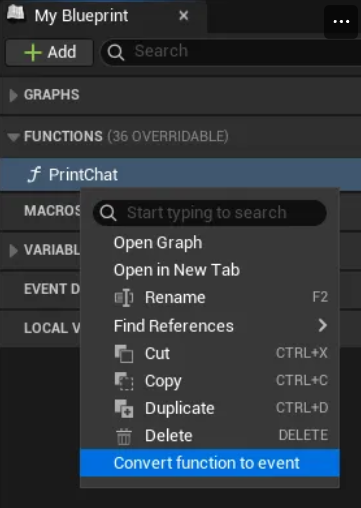
PrintChat Event Conversion
- Change the parent class of BP_ChatWidget to BaseChatWidget.
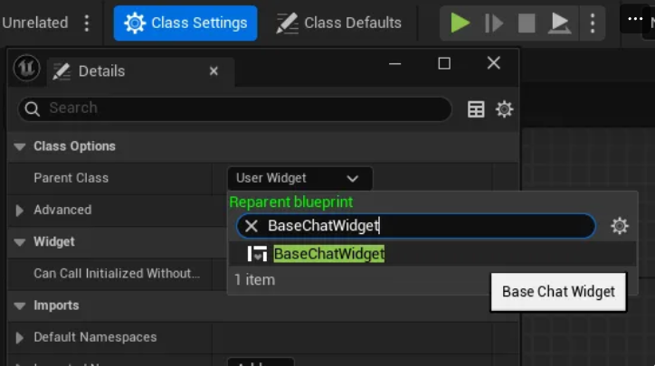
Parent Class Change
- Modify the event graph when SendButton is clicked.
- Add Get GissChatNet node and Send Chat node
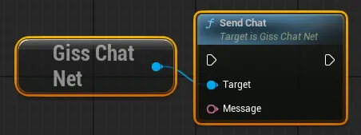
Adding GissChatNet Node
- Replace the existing Print Chat node with Send Chat node.
- Add Get GissChatNet node and Send Chat node
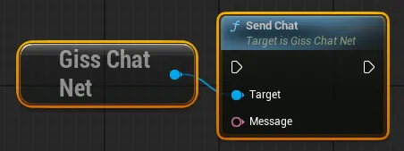
- The final appearance of the BP_ChatWidget Blueprint graph is as follows.
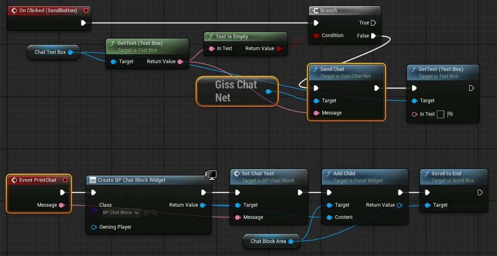
BP_ChatWidget Final Appearance
- Convert the PrintChat function to an event.
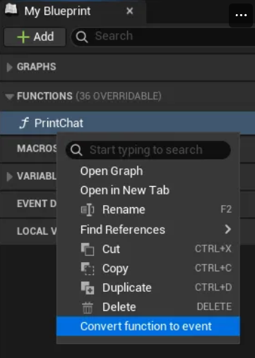
3.3. Chat Testing
- Build and run the chat_server project.
- Run the Unreal Engine project level and verify the chat functionality.
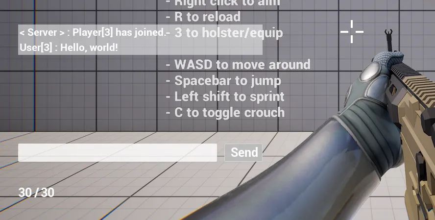
Chat Function Test 1
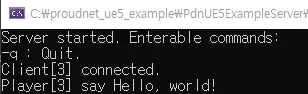Chat Function Test 2
4. 实现幻影角色
本节介绍如何构建具有增强游戏功能的幻影角色。
4.1. 添加幻影蓝图角色
- Duplicate two Blueprint classes.
- Navigate to "All - Content - InfimaGames - FreeFPSTemplate - Core" in the Content Browser.
- Duplicate the two Blueprint classes BP_Character and ABP_Character.
- Rename them to BP_MirageCharacter and ABP_MirageCharacter respectively.
- Open the BP_MirageCharacter Blueprint editor and proceed with the following steps.
- Select CharacterArms in the Components window.
- Change the Anim Class of Animation to ABP_MirageCharacter.
- Set the Skeletal Mesh Asset of the mesh to SKM_Manny_Simple.
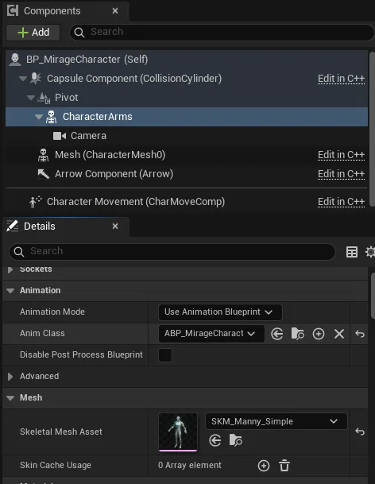
BP_MirageCharacter Configuration
- Place BP_MirageCharacter in the level and run to verify.
If placed as shown below, it is normal based on the current point in time.
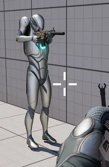Mirage Character Placement Verification
4.2. 移动动画镜像
4.2.1. 动画变量复制
- 实现 C++ 类 BaseMirageCharacter。
- 创建继承自 Character 的 BaseMirageCharacter 类
- 修改生成的类的源代码。
- 修改内容
- BaseMirageCharacter.h
// Fill out your copyright notice in the Description page of Project Settings. #pragma once #include "CoreMinimal.h" #include "GameFramework/Character.h" #include "BaseMirageCharacter.generated.h" UCLASS() class PDNUE5EXAMPLECLIENT_API ABaseMirageCharacter : public ACharacter { GENERATED_BODY() public: // Sets default values for this character's properties ABaseMirageCharacter(); protected: // Called when the game starts or when spawned virtual void BeginPlay() override; public: // Called every frame virtual void Tick(float DeltaTime) override; // Called to bind functionality to input virtual void SetupPlayerInputComponent(class UInputComponent* PlayerInputComponent) override; + UFUNCTION(BlueprintCallable, BlueprintImplementableEvent) + void UpdateAnimationParameter(bool aiming, bool closeToWall, bool moving, bool running, float jumpVelocity, FVector3f mouseSwayLocation, FVector3f moveSwayLocation); };
- BaseMirageCharacter.h
- 完整代码
- BaseMirageCharacter.h
// Fill out your copyright notice in the Description page of Project Settings. #pragma once #include "CoreMinimal.h" #include "GameFramework/Character.h" #include "BaseMirageCharacter.generated.h" UCLASS() class PDNUE5EXAMPLECLIENT_API ABaseMirageCharacter : public ACharacter { GENERATED_BODY() public: // Sets default values for this character's properties ABaseMirageCharacter(); protected: // Called when the game starts or when spawned virtual void BeginPlay() override; public: // Called every frame virtual void Tick(float DeltaTime) override; // Called to bind functionality to input virtual void SetupPlayerInputComponent(class UInputComponent* PlayerInputComponent) override; UFUNCTION(BlueprintCallable, BlueprintImplementableEvent) void UpdateAnimationParameter(bool aiming, bool closeToWall, bool moving, bool running, float jumpVelocity, FVector3f mouseSwayLocation, FVector3f moveSwayLocation); };
- BaseMirageCharacter.h
- 修改内容
- 将 BaseMirageCharacter 指定为 BP_MirageCharacter 的父类
- 实现使用事件函数的动画变量复制。
- 修改 ABP_Character 蓝图。
- 打开 ABP_Character 蓝图编辑器并切换到事件图表选项卡。
- 移动到 BlueprintUpdateAnimation 事件执行流程的末尾部分。
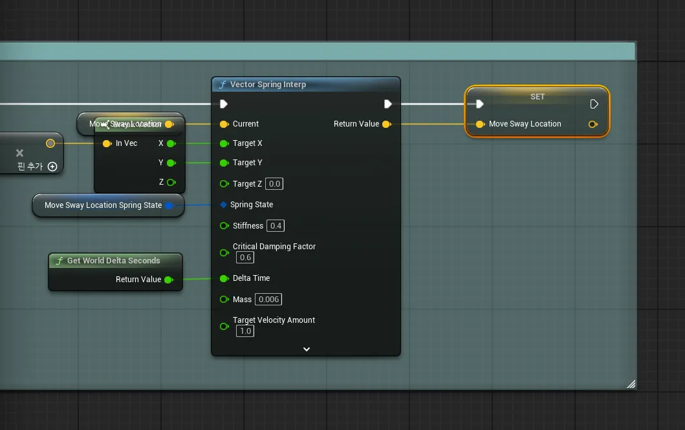
BlueprintUpdateAnimation 事件
- 创建并连接 Get Actor Of Class 节点，并将 Class 指定为 BP_MirageCharacter。
- 创建并连接 Update Animation Parameter 节点，并连接所有变量。所有变量都可以从蓝图的变量列表中获取。
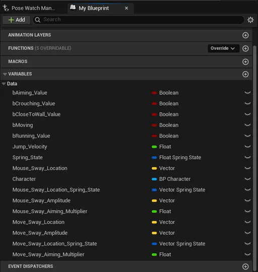
Update Animation Parameter 节点
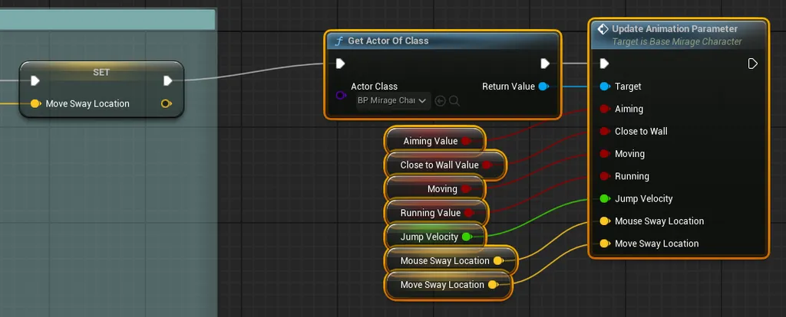变量连接完成
- 修改 BP_MirageCharacter 蓝图。
- 打开 BP_MirageCharacter 蓝图编辑器并切换到事件图表选项卡。
- 添加 4 个变量。
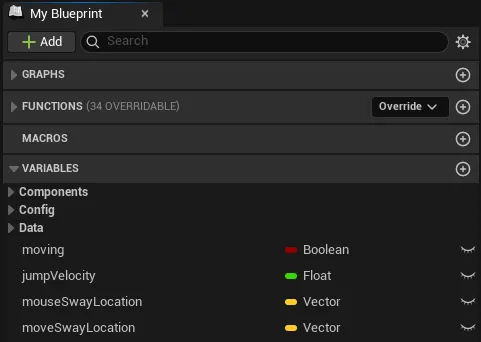
添加变量
- 添加 Event UpdateAnimationParameter 节点。
- 将事件的参数保存到蓝图变量中。
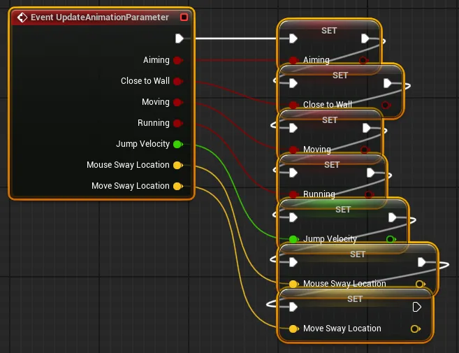
参数保存
- 断开 Event Tick 节点的连接。
Event Tick 连接断开
- 修改 ABP_MirageCharacter 蓝图。
- 打开 ABP_MirageCharacter 蓝图编辑器并切换到事件图表选项卡。
- 添加 Try Get Pawn Owner 节点。
- 添加 Cast To BP_MirageCharacter 节点并连接。
- 从类型转换的角色中获取变量并保存到动画蓝图变量中。
动画变量连接
- 修改 ABP_Character 蓝图。
- 执行关卡并确认动画复制动作
可以观察到幻影角色在跑步、跳跃、瞄准等动作时模仿动作的样子。
动画复制确认
4.2.2. 应用校正动画
- 准备校正动画
- 下载动画文件。
Invert.fbx (需要下载文件)
- 将下载的文件拖拽到虚幻编辑器的内容浏览器中。
- 在 Animations 选项卡的骨架项目中指定 SKEL_UE5_Mannequin。
指定骨架
- 点击导入按钮。
- 删除生成的两个动画中的一个。(可选)
删除动画
- 下载动画文件。
- 보정 애니메이션을 수정합니다.
- Inver_Anim_Scene 애니메이션 시퀀스의 블루프린트 에디터를 엽니다.
- 에셋 디테일 창의 애디티브 세팅을 수정합니다.
- 애디티브 애님 타입 - Mesh Space 선택
- 베이스 포즈 타입 - Selected animation frame 선택
- 베이스 포즈 애니메이션 - A_FP_AssaultRifle_Idle_Loop 선택
애디티브 세팅
- 修改 ABP_MirageCharacter 蓝图图表。
- 添加 Apply Additive 节点和 Invert_Anim_Scene 动画节点。
- 与 A_FP_AssaultRifle_Idle_Loop 动画节点连接。
Apply Additive 节点连接
- 对其余 4 个动画节点进行相同操作。所有节点都同样使用 Inver_Anim_Scene 和 Apply Additive。
修改所有动画节点
- 执行关卡并确认动画校正结果
可以确认手臂骨架的位置已校正到正常范围内。
动画校正结果
4.2.3. 移动时应用腿部动画
- 按照以下步骤修改 ABP_MirageCharacter - AnimGraph 蓝图图表中与 A_FP_AssaultRifle_Run_Loop 连接的部分。
- 添加 Layered blend per bone 节点。
- 修改添加节点的详细信息。
- 在设置 - 图层设置 - 索引[0]中添加两个分支过滤器。
- 分别将骨骼名称指定为 thigh_l、thigh_r。
Layered blend per bone 设置
- 将现有的 Apply Additive 节点连接到上述节点的 Base Pose。
- 添加 MM_Run_Fwd 动画节点并连接到上述节点的 Blend Poses 0。
- 在 MM_Run_Fwd 节点的详细信息窗口中启用动画循环。
激活动画循环
- 最终效果如下。注释节点的大小调整是可选的。
A_FP_AssaultRifle_Run_Loop 最终效果
- 对其余 4 个动画节点同样应用上述过程。
- Layered blend per bone 节点的设置相同，因此可以复制使用。
- 代替 MM_Run_Fwd 节点，需要根据情况使用 MM_Walk_Fwd 或 MM_Idle。
- 完成所有过程后的图表如下。
整体图表 1
整体图表 2
- 执行关卡并确认腿部动画应用
可以确认播放了行走和跑步动画。
腿部动画确认
4.3. 动作动画和行为复制
- 修改 BaseMirageCharacter 类的源代码。
- 修改内容
- BaseMirageCharacter.h
// Fill out your copyright notice in the Description page of Project Settings. #pragma once #include "CoreMinimal.h" #include "GameFramework/Character.h" #include "BaseMirageCharacter.generated.h" UCLASS() class PDNUE5EXAMPLECLIENT_API ABaseMirageCharacter : public ACharacter { GENERATED_BODY() public: // Sets default values for this character's properties ABaseMirageCharacter(); protected: // Called when the game starts or when spawned virtual void BeginPlay() override; public: // Called every frame virtual void Tick(float DeltaTime) override; // Called to bind functionality to input virtual void SetupPlayerInputComponent(class UInputComponent* PlayerInputComponent) override; UFUNCTION(BlueprintCallable, BlueprintImplementableEvent) void UpdateAnimationParameter(bool aiming, bool closeToWall, bool moving, bool running, float jumpVelocity, FVector3f mouseSwayLocation, FVector3f moveSwayLocation); + UFUNCTION(BlueprintCallable, BlueprintImplementableEvent) + void OnFired(); + + UFUNCTION(BlueprintCallable, BlueprintImplementableEvent) + void OnReloaded(); };
- BaseMirageCharacter.h
- 修改内容
- 修改 BP_Character 蓝图图表。
- 创建在重新装弹时调用幻影角色重新装弹事件的图表。
- 移动到图表上方与 Reload 相关的区域。
Reload 相关区域
- 创建 Get Actor Of Class 节点并在类中指定 BP_MirageCharacter。
- 连接到 On Reloaded 函数节点。
添加 On Reloaded 节点
- 在 Reload 和 Delay 函数之间连接。
Reload 事件连接
- 移动到图表上方与 Reload 相关的区域。
- 创建在射击时调用幻影角色射击事件的图表。
- 移动到图表右侧与 Shoot 相关区域的末端。
Shoot 相关区域
- 创建 Get Actor Of Class 节点并在类中指定 BP_MirageCharacter。
- 连接到 On Fired 函数节点。
- 在 (Current Ammunition) Set 和 Delay 函数之间连接。
Shoot 事件连接
- 移动到图表右侧与 Shoot 相关区域的末端。
- 创建在重新装弹时调用幻影角色重新装弹事件的图表。
- 修改 BP_MirageCharacter 蓝图图表。
- 移动到图表上方与 Reload 相关的区域。
- 在 Play Montage 节点前连接 On Reloaded 事件节点
On Reloaded 事件连接
- 移动到图表右侧与 Shoot 相关的区域。
- 在 Shoot 节点前连接 On Fired 事件节点
On Fired 事件连接
- 运行关卡，可以看到幻影角色模仿装弹和射击的动作。
动作动画测试
4.4. 位置、旋转等其他复制
- 修改 BaseMirageCharacter 类的源代码。
- 修改内容
- BaseMirageCharacter.h
// Fill out your copyright notice in the Description page of Project Settings. #pragma once #include "CoreMinimal.h" #include "GameFramework/Character.h" #include "BaseMirageCharacter.generated.h" UCLASS() class PDNUE5EXAMPLECLIENT_API ABaseMirageCharacter : public ACharacter { GENERATED_BODY() public: // Sets default values for this character's properties ABaseMirageCharacter(); protected: // Called when the game starts or when spawned virtual void BeginPlay() override; public: // Called every frame virtual void Tick(float DeltaTime) override; // Called to bind functionality to input virtual void SetupPlayerInputComponent(class UInputComponent* PlayerInputComponent) override; + UFUNCTION(BlueprintCallable, BlueprintImplementableEvent) + void UpdateTransform(FVector3f position, FQuat4f orientation, FVector3f linearVelocity, FVector3f angularVelocity, float aimPitch); UFUNCTION(BlueprintCallable, BlueprintImplementableEvent) void UpdateAnimationParameter(bool aiming, bool closeToWall, bool moving, bool running, float jumpVelocity, FVector3f mouseSwayLocation, FVector3f moveSwayLocation); UFUNCTION(BlueprintCallable, BlueprintImplementableEvent) void OnFired(); UFUNCTION(BlueprintCallable, BlueprintImplementableEvent) void OnReloaded(); };
- BaseMirageCharacter.h
- 完整代码
- BaseMirageCharacter.h
// Fill out your copyright notice in the Description page of Project Settings. #pragma once #include "CoreMinimal.h" #include "GameFramework/Character.h" #include "BaseMirageCharacter.generated.h" UCLASS() class PDNUE5EXAMPLECLIENT_API ABaseMirageCharacter : public ACharacter { GENERATED_BODY() public: // Sets default values for this character's properties ABaseMirageCharacter(); protected: // Called when the game starts or when spawned virtual void BeginPlay() override; public: // Called every frame virtual void Tick(float DeltaTime) override; // Called to bind functionality to input virtual void SetupPlayerInputComponent(class UInputComponent* PlayerInputComponent) override; UFUNCTION(BlueprintCallable, BlueprintImplementableEvent) void UpdateTransform(FVector3f position, FQuat4f orientation, FVector3f linearVelocity, FVector3f angularVelocity, float aimPitch); UFUNCTION(BlueprintCallable, BlueprintImplementableEvent) void UpdateAnimationParameter(bool aiming, bool closeToWall, bool moving, bool running, float jumpVelocity, FVector3f mouseSwayLocation, FVector3f moveSwayLocation); UFUNCTION(BlueprintCallable, BlueprintImplementableEvent) void OnFired(); UFUNCTION(BlueprintCallable, BlueprintImplementableEvent) void OnReloaded(); };
- BaseMirageCharacter.h
- 修改内容
- 修改 BP_Character 蓝图图表。
- 添加浮点类型的 AimPitch 变量。
添加 AimPitch 变量
- 移动到 Tick 事件代码结束的部分。
- 创建两个路由节点，连接 Branch 节点的 False 和 Stop Running 两个节点。

路由节点 1
路由节点 2
- 移动路由节点。
路由节点移动
- 创建调用 BP_MirageCharacter 的 Update Transform 的图表
图表创建完成的样子如下，可以在下面确认过程。
Update Transform 图表完成
查看过程
- 创建 Get Actor Of Class 节点并在类中指定 BP_MirageCharacter。
- 连接到 Update Transform 函数节点。
添加 Update Transform 节点
- 创建用 Get Actor Location、Get Actor Rotation 获取移动/旋转值的节点。
添加位置/旋转节点
- 将 Get Actor Rotation 连接到 To Quaternion 节点。
To Quaternion 连接
- 创建 Get Character Arms 节点，连接到获取速度和角速度的节点。
Character Arms 节点
速度/角速度节点
- 创建 Get Control Rotation 节点，从返回值计算 Pitch 旋转值。
所有节点都可以通过节点名称进行连接。
中间的乘法节点可以用 Multiply 创建。

Control Rotation 和 Pitch 计算
- 将所有添加的节点连接到 Update Transform 的合适参数。 Get Physics Linear Velocity 节点必须连接执行引脚。
- 添加浮点类型的 AimPitch 变量。
- 修改 BP_MirageCharacter 蓝图图表。
- 添加浮点类型的 AimPitch 变量。
- 添加 UpdateTransform 事件节点。
- 添加并连接适合事件节点的各个节点。
BP_MirageCharacter UpdateTransform 实现
- 断开 Position 节点的连接，添加 Make Vector 节点进行连接。
这是为了防止单机测试环境中的错误行为的措施。
Position Make Vector 连接
- 移动到与 Shoot 相关的部分。
- 如下所示构成并连接图表。
Shoot 相关图表构成
- 修改 ABP_MirageCharacter 蓝图的事件图表。
- 添加浮点类型的 AimPitch 变量。
- 从类型转换的 BP_MirageCharacter 中调用并保存值。
ABP_MirageCharacter AimPitch 变量
- 修改 ABP_MirageCharacter 蓝图的 AnimGraph。
- 移动到 Mouse Sway 相关部分。
Mouse Sway 相关部分
- 添加 Transform (Modify) Bone 节点并连接到 Mouse Sway 注释节点前面。
- 用 AimPitch 变量值创建 Rotator 并应用到节点的 Rotation。
Transform Bone 节点应用
- 移动到 Mouse Sway 相关部分。
- 运行关卡并测试功能。
幻影角色现在可以瞄准和射击与玩家角色相同的方向。
位置旋转复制测试
5. 幻影角色在线集成
本节介绍如何将幻影角色与 ProudNet 网络集成以实现多人游戏。
5.1. Visual Studio 项目工作
5.1.1. 创建 game_server 项目
- 在 VisualStudio 中创建空白项目 game_server
- 向 game_server 项目添加 3 个新项目 main.cpp、setting.cpp、setting.h。
- 修改 game_server 项目的属性。
- "C/C++ - 语言 - C++ 语言标准" 从下拉菜单中选择 "ISO C++20 标准 (/std:C++20)"
- "C/C++ - 常规 - 附加包含目录"
从下拉菜单中选择 <编辑…>
在弹出窗口中添加以下路径
C:\Program Files (x86)\Nettention\ProudNet\include
- "链接器 - 常规 - 附加库目录"
从下拉菜单中选择 <编辑…>
在弹出窗口中添加以下路径
C:\Program Files (x86)\Nettention\ProudNet\lib\$(Platform)\v140\$(Configuration)
- "链接器 - 输入 - 附加依赖项"
从下拉菜单中选择 <编辑…>
在弹出窗口中添加以下文件名
ProudNetServer.lib ProudNetClient.lib
- "生成事件 - 生成后事件 - 命令行"
从下拉菜单中选择 <编辑…>
在弹出窗口中添加以下命令
xcopy /Y "C:\Program Files (x86)\Nettention\ProudNet\lib\$(Platform)\v140\$(Configuration)\libcrypto-3-x64.dll" "$(OutDir)" xcopy /Y "C:\Program Files (x86)\Nettention\ProudNet\lib\$(Platform)\v140\$(Configuration)\libssl-3-x64.dll" "$(OutDir)"
- 在每个源文件中输入代码。
- 完整代码
- setting.h
#pragma once namespace ProudSetting { namespace GAME { extern const ::Proud::Guid version; extern const int server_port; } } - setting.cpp
#include <ProudNetClient.h> #include "setting.h" namespace ProudSetting { namespace GAME { const ::Proud::PNGUID guid = { 0x3ae33249, 0xecc6, 0x4980, { 0xbc, 0x5d, 0x7b, 0xa, 0x99, 0x9c, 0x7, 0x39 } }; const ::Proud::Guid version = ::Proud::Guid(guid); const int server_port = 33338; } } - main.cpp
#include <iostream> #include <format> #include <memory> #include <ProudNetServer.h> #include "setting.h" std::shared_ptr<Proud::CNetServer> net_server; int main() { net_server = std::shared_ptr<Proud::CNetServer>(Proud::CNetServer::Create()); net_server->OnClientJoin = [](Proud::CNetClientInfo* clientInfo) { std::cout << "Client[" << (int)clientInfo->m_HostID << "] connected.\n"; }; net_server->OnClientLeave = [](Proud::CNetClientInfo* clientInfo, Proud::ErrorInfo* error, const Proud::ByteArray byte_arr) { std::cout << "Client[" << (int)clientInfo->m_HostID << "] disconnected.\n"; }; Proud::CStartServerParameter start_param; start_param.m_protocolVersion = ProudSetting::GAME::version; start_param.m_tcpPorts.Add(ProudSetting::GAME::server_port); try { net_server->Start(start_param); } catch (Proud::Exception& error) { std::cout << "Server start failed: " << error.what() << endl; return 0; } std::cout << ("Server started. Enterable commands:\n"); std::cout << ("-q : Quit.\n"); std::string input; while (true) { std::cin >> input; if (input[0] == '-') { if (input == "-q") break; } } std::cout << "Stopping server...\n"; net_server->Stop(); net_server = nullptr; std::cout << "Server stopped.\n"; return 0; }
- setting.h
- 完整代码
5.1.2. 创建 game_pidl 项目
- 在 PdnUE5ExampleServer 中添加新的空白项目 game_pidl。
- 添加文件 P2P.PIDL，并修改其属性。
- "常规 - 项目类型" 从下拉菜单中选择"自定义生成工具"
- "自定义生成工具 - 常规 - 命令行"
输入文本
C:\"Program Files (x86)"\Nettention\ProudNet\util\PIDL.exe "%(FullPath)" -cpp
- "自定义生成工具 - 常规 - 描述"
输入文本
%(Filename).PIDL Compiling...
- "自定义生成工具 - 常规 - 输出"
从下拉菜单中选择 <编辑…>
在弹出窗口中添加以下路径
%(RootDir)%(Directory)\%(Filename)_common.cpp %(RootDir)%(Directory)\%(Filename)_common.h %(RootDir)%(Directory)\%(Filename)_proxy.cpp %(RootDir)%(Directory)\%(Filename)_proxy.h %(RootDir)%(Directory)\%(Filename)_stub.cpp %(RootDir)%(Directory)\%(Filename)_stub.h
- 在文件中输入代码。
- 完整代码
- P2P.PIDL
[access=public] global GAME_P2P 3000 { Transform([in] Proud::CharacterTransformData transformData); AnimationParams([in] Proud::CharacterAnimationParams animationParams); Action([in] Proud::CharacterAction actionId); }
- P2P.PIDL
- 完整代码
- 构建 game_pidl 项目。
5.1.3. 修改 game_server 项目源代码
- 修改 game_server 项目的源代码。
- 应用修改内容，添加 P2P 组管理功能。
- 在 setting.h 和 setting.cpp 中添加数据结构和序列化函数。
5.2. 虚幻项目工作
- 创建 GissGameNet C++ 类
- 创建继承自 GameInstanceSubsystem 的 C++ 类 GissGameNet。
- 修改 GissGameNet 类的源代码。
- GissGameNet.h
// Fill out your copyright notice in the Description page of Project Settings. #pragma once #include "CoreMinimal.h" #include "Subsystems/GameInstanceSubsystem.h" #include "GissGameNet.generated.h" /** * */ UCLASS() class PDNUE5EXAMPLECLIENT_API UGissGameNet : public UGameInstanceSubsystem { GENERATED_BODY() public: UFUNCTION(BlueprintCallable) void UpdateCharacterTransform(FVector3f position, FQuat4f rotation, FVector3f linearVelocity, FVector3f angularVelocity, float aimPitch); UFUNCTION(BlueprintCallable) void UpdateCharacterAnimationParameter(bool aiming, bool closeToWall, bool moving, bool running, float jumpVelocity, FVector3f mouseSwayLocation, FVector3f moveSwayLocation); UFUNCTION(BlueprintCallable) void SendCharacterFired(); UFUNCTION(BlueprintCallable) void SendCharacterReloaded(); private: virtual void Initialize(FSubsystemCollectionBase& Collection) override; virtual void Deinitialize() override; };
- GissGameNet.h
- 修改 BP_Character 蓝图图表。
- 将调用 BP_MirageCharacter 的 Update Transform 的图表替换为调用 GissGameNet 的 Update Character Transform 的图表。
更改 Update Character Transform
- 将调用 BP_MirageCharacter 的 On Fired 的图表替换为调用 GissGameNet 的 Send Character Fired 的图表。
更改 Send Character Fired
- 将调用 BP_MirageCharacter 的 On Reloaded 的图表替换为调用 GissGameNet 的 Send Character Reloaded 的图表。
更改 Send Character Reloaded
- 将调用 BP_MirageCharacter 的 Update Transform 的图表替换为调用 GissGameNet 的 Update Character Transform 的图表。
- 修改 ABP_Character 蓝图的事件图表。
- 将调用 BP_MirageCharacter 的 Update Animation Parameter 的图表替换为调用 GissGameNet 的 Update Character Animation Parameter 的图表。
更改 Update Character Animation Parameter
- 将调用 BP_MirageCharacter 的 Update Animation Parameter 的图表替换为调用 GissGameNet 的 Update Character Animation Parameter 的图表。
- 构建并运行服务器后执行关卡时，可以确认与集成工作之前相同的结果。
6. 最终项目构建和测试
本节介绍项目完成、构建和综合测试程序。
6.1. 测试代码修改
- 修改 BaseMirageCharacter 类代码。
- 添加用于角色 ID 管理的 SetId 和 GetId 函数。
- 修改 GissGameNet 类代码。
- 实现多人游戏环境中基于 ID 的角色识别管理系统。
- 添加 P2P 成员加入时自动创建幻影角色的功能。
- 通过禁用回环，修改使自己的动作不会重新发送给自己。
- 修改 BP_MirageCharacter 蓝图类。
- 将 Update Transform 事件的 Position 重新直接连接到 Set Actor Location。
Position 直接连接
- 将 Update Transform 事件的 Position 重新直接连接到 Set Actor Location。
- 在关卡编辑器的大纲窗口中删除 BP_MirageCharacter 实例。
删除 MirageCharacter 实例
6.2. 项目构建
- 构建服务器可执行文件
- 通过 Visual Studio 顶部的下拉菜单更改构建配置。
更改构建配置
- 分别构建 chat_server 和 game_server 项目。
- 可以在解决方案的子文件夹中确认已构建的可执行文件。
已构建的可执行文件
- 通过 Visual Studio 顶部的下拉菜单更改构建配置。
- 构建客户端可执行文件
- 可以通过虚幻编辑器的关卡执行旁边的按钮构建虚幻项目。
虚幻项目构建
- 可以通过指定的路径确认已构建的文件。
已构建的客户端文件
- 可以通过虚幻编辑器的关卡执行旁边的按钮构建虚幻项目。
6.3. 测试
- 运行服务器项目中构建的 chat_server.exe 和 game_server.exe。
- 运行虚幻项目中构建的 Windows 文件夹下的 PdnUE5ExampleClient.exe。 根据 PC 规格，可能会对计算机造成严重负载，需要注意。
- 可以确认使用聊天服务器和游戏服务器的两个客户端的状态。
最终测试结果